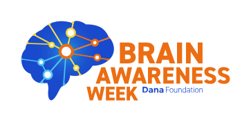

SOBRE
A International Brain Week (SIC) é uma campanha internacional promovida pela Dana Foundation, que tem como foco promover o encontro entre as neurociências e a sociedade. O evento acontece há 27 anos no mês de março e já marcou presença em cerca de 120 países, estando em diversos estados do Brasil desde 2010. No ano de 2023, a SIC estará entre os dias 13 e 19 de março. Durante esses dias, teremos ciclos de palestras, mesas redondas, apresentação de vídeos e filmes com discussão de especialistas, feiras itinerantes com explicações sobre o funcionamento do cérebro, suas doenças e distúrbios, além de experimentos com o cérebro e demonstrações de tecnologias relacionadas à atividade cerebral. e comportamento. Os eventos centrais geralmente são realizados na(s) instituição(ões) organizadora(s) e os eventos satélites são realizados em outras instituições, universidades, faculdades, escolas e shoppings.
INSCRIÇÃO
Inscreva-se no evento e ganhe novas experiências
LINKS RELEVANTES
Pretendo colocar um banner de imagens com efeitos de visualização
CONTATO
Pretendo colocar o rodapé da página nesta secção
Rodapé com contato
The International Brain Week (SIC) is an international campaign promoted by the Dana Foundation, which focuses on promoting the meeting between neurosciences and society. The event takes place for 27 years in March and has already been present in about 120 countries, being in several states of Brazil since 2010. In the year 2023, SIC will be between March 13th and 19th. During these days, we will have cycles of lectures, round tables, presentation of videos and films with discussion by specialists, itinerant fairs with explanations about the functioning of the brain, its diseases and disorders, in addition to experiments with the brain and demonstrations of technologies related to brain activity. and behavior. Central events are usually held at the organizing institution(s) and satellite events are held at other institutions, universities, colleges, schools and malls.